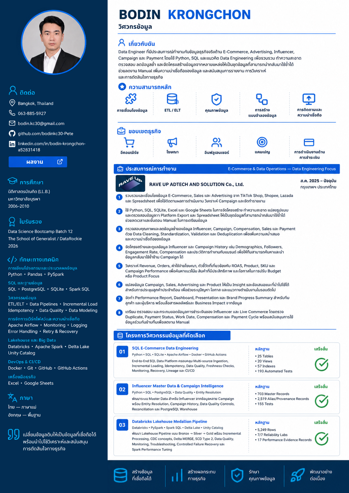
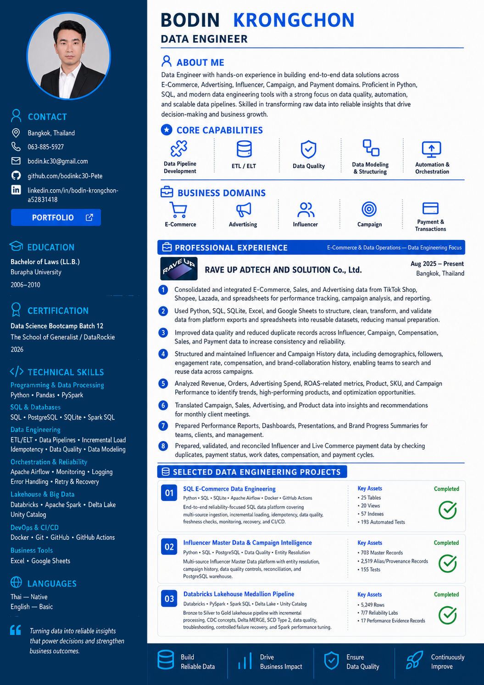
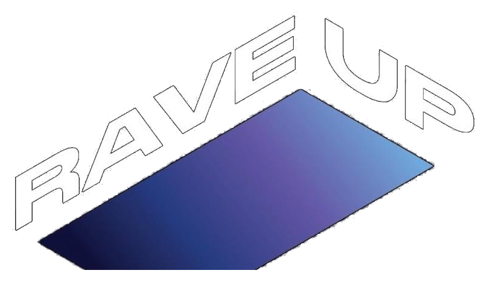
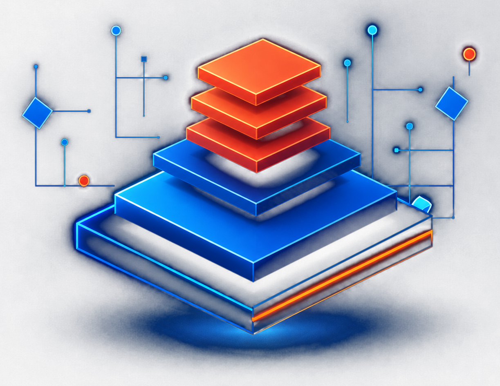

Thai Resume
TH

View or download image and PDF versions of my Thai and English resumes.



Consolidated e-commerce, sales, and advertising data from TikTok Shop, Shopee, and Lazada to support performance monitoring, campaign analysis, and monthly reporting.
Structured scattered operational data from spreadsheets and platform exports into reusable datasets using Excel, Google Sheets, SQLite, SQL, and Python, improving accessibility and reducing repetitive manual preparation.
Cleaned, standardized, validated, and deduplicated influencer, campaign, compensation, sales, and payment data to improve consistency, reduce redundant records, and support reliable downstream analysis.
Maintained reusable influencer profiles and campaign history, including demographics, follower counts, engagement rates, compensation, and prior brand activities, to support campaign matching and reduce repeated sourcing work.
Monitored sales and advertising performance using revenue, orders, ad spend, product performance, and ROAS-related metrics to identify trends, performance gaps, and opportunities for campaign improvement.
Analyzed product, SKU, and campaign performance to identify best-selling products, advertising efficiency, underperforming campaigns, and opportunities to improve budget allocation and product focus.
Translated campaign, sales, advertising, and product data into actionable insights and recommendations for monthly client reviews, helping brands identify performance issues, opportunities, and next actions.
Prepared monthly performance reports, presentation decks, dashboards, and brand progress summaries for client meetings and management reviews, communicating results and business implications to stakeholders.
Prepared and reconciled influencer and live-commerce payment data by brand and individual, checking duplicate records, payment status, work dates, compensation, and payment-cycle requirements before management processing.
Supported e-commerce, advertising, influencer, payment, and project operations in a lean startup environment, applying data-driven workflows to reduce manual effort, improve turnaround time, and enable teams to reuse trusted information.
DATA ENGINEER
Build • Operate • Improve
I build reliable, scalable, production-style data systems that turn real business data into trusted, actionable information.
End-to-end lakehouse platform with incremental processing, data quality, reliability testing, and measured performance tuning.

Production-style data engineering projects with real-world business context and verified evidence.
Reliable SQL data platform with incremental load, data quality, monitoring, API serving, and recovery.
Medallion architecture with Delta Lake, CDC, SCD2, reliability labs, and measured Spark optimization.
Golden Master, deterministic identity resolution, lineage, PostgreSQL warehouse, and explainable matching.
Payment-data validation, rejected-record routing, SQLite analytics, and privacy-safe portfolio outputs.
Multi-source Excel pipeline with validation, transformation, SQLite analytics, and portfolio-safe outputs.
Build beyond the happy path: data quality, monitoring, recovery, lineage, CI/CD, and performance evidence.
Capabilities grounded in completed projects, from ETL and modeling to reliability and serving.
Real operational context across e-commerce, influencer, campaign, payment, and reporting workflows.
Open to Data Engineering opportunities and technical conversations.
Send Message →“Data is not just numbers. It is better decisions.”
Five completed repositories. Each project begins with a real data problem and shows how the system was built, validated, operated, and explained.
A reliability-focused SQL platform with incremental loading, idempotency, quality and freshness gates, monitoring, recovery, Airflow, read-only API serving, Docker, and CI.
A medallion lakehouse that demonstrates CDC, SCD Type 2, controlled failure labs, monitoring, troubleshooting, and measured Spark performance tuning.
A deterministic Master Data and PostgreSQL warehouse project that turns fragmented influencer workbooks into governed identity, campaign, performance, and explainable matching data.
A privacy-aware payment data pipeline that validates business records, routes rejects, loads SQLite, produces analytical summaries, and exports six public-safe outputs.
A multi-source Excel ETL pipeline that standardizes daily shop metrics, validates 105 records, loads SQLite, produces SQL analytics, and publishes safe output samples.
The portfolio proves that systems can be tested, observed, diagnosed, recovered, and verified — not only executed successfully.
Contracts, thresholds, reconciliation, quarantine, validation, and regression checks.
Dataset lineage, runtime lineage, asset registry, PII classification, masking, and hashing.
Run audits, step telemetry, SLA signals, alert fingerprints, occurrence history, and lifecycle.
Controlled failures, retry, RCA, recovery contracts, backfill, and recovery validation.
Query plans, benchmark evidence, indexing, Spark tuning, and regression protection.
Capability cards describe what I can build and operate today — not a future learning roadmap.
Batch • Incremental • CDC • SCD
Relational • Warehouse • Medallion
Airflow • Scheduling • Recovery
Validation • Reconciliation • Freshness
FastAPI • Read-only access • Safe outputs
Docker • GitHub Actions • Reproducibility
SQL • PostgreSQL • SQLite
E-commerce • Influencer • Campaign • Payment
Portfolio projects extend recurring operational data pain points into engineering labs. They do not claim that every portfolio technology is deployed in production at the company.
RAVE UP ADTECH AND SOLUTION Co., Ltd. · Bangkok, Thailand · Hybrid
I connect recurring operational data work with reusable engineering practices that reduce manual preparation and improve trust in analysis.
TikTok Shop, Shopee and Lazada data consolidated into reusable datasets and reporting workflows.
Clean, standardize, validate and deduplicate influencer, campaign, sales, compensation and payment records.
Analyze sales, advertising, product, SKU and campaign performance to surface trends and opportunities.
Turn campaign and commerce data into client insights, dashboards, presentations and next-action recommendations.
Prepare and reconcile payment data while supporting e-commerce, influencer and project operations in a lean team.
My portfolio connects hands-on e-commerce, influencer, campaign, payment, and reporting work with reliable data engineering. The goal is to reduce repetitive preparation, improve data trust, and give more time back to analysis and better decisions.
I prefer systems that are observable, recoverable, testable, and explainable — not just pipelines that happen to finish successfully.
Start with the business problem and the data pain behind it.
Create reusable systems that can be operated and extended.
Trace failures through evidence and verify recovery.
Keep future learning separate from verified capability.
Only credentials with a confirmed public link are shown here.
View my Thai and English resumes.
For Data Engineering opportunities, portfolio review, or technical conversations, use the channels below.
Send Message→{kind=link}
{kind=link}